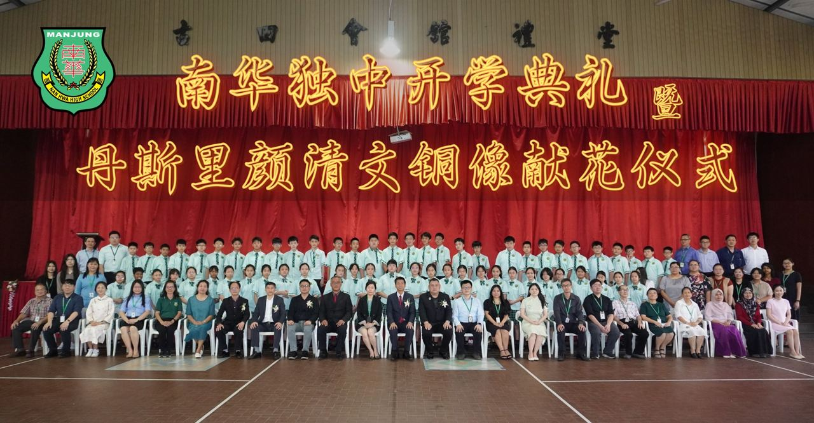
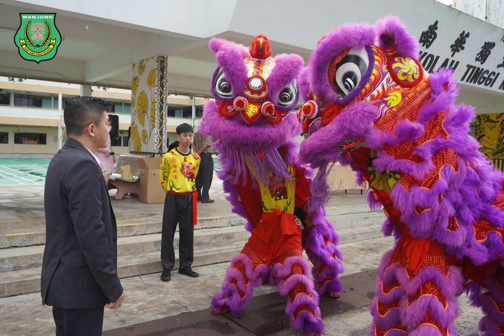
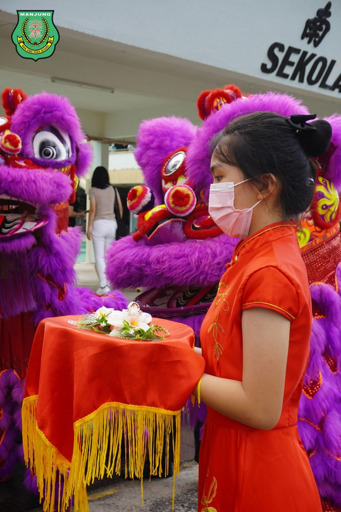
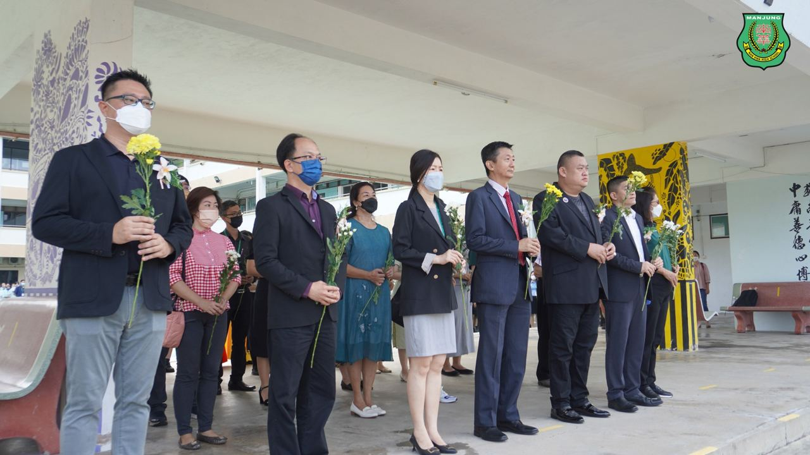
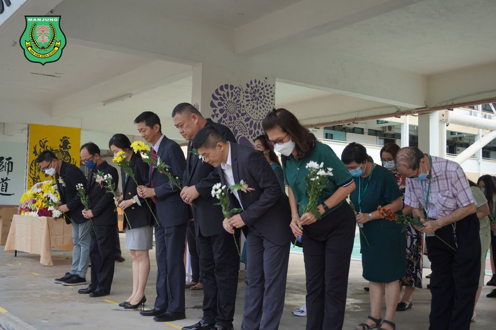
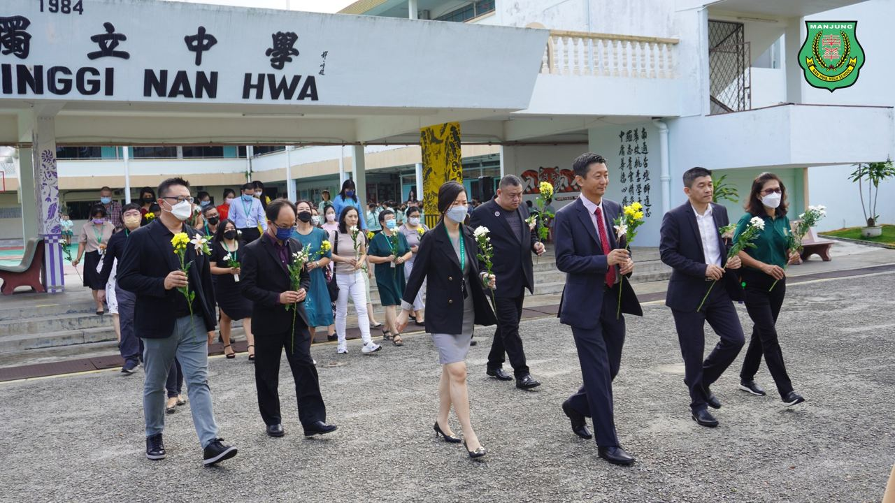
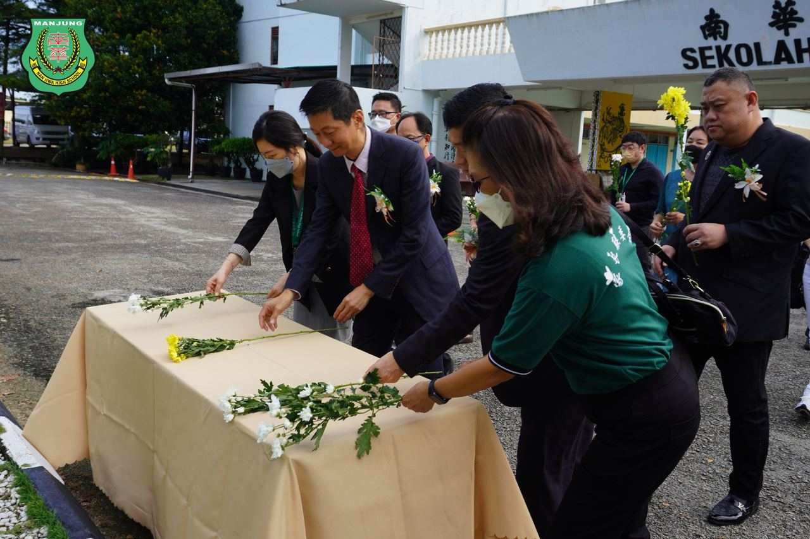
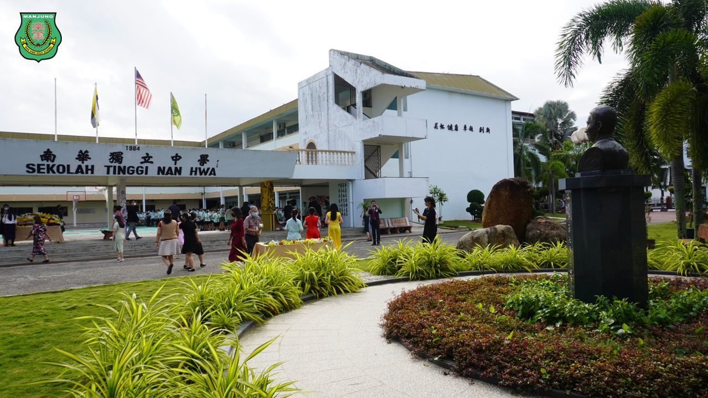

南华独中开学典礼 暨
南华独中开学典礼 暨
丹斯里颜清文铜像献花仪式
曼绒南华独中董家教师生聚集在大礼堂，举行既简单又隆重的开学典礼，迎接70多位初一新生与插班生加入南华独中大家庭。此外也安排了嘉宾与师生向“南华独中之父”丹斯里颜清文铜像献花仪式，感恩先贤为华教无私奉献的精神。
秉持着“感恩先贤、心怀恩惠”的精神，特此在开学典礼前，安排董家教师生向丹斯里颜清文铜像献花，现场庄重严肃的气氛唤起众人感激之情。
献花仪式后，董家教师生移步到礼堂进行开学典礼。初一新生迈着神采奕奕、精神焕发的步伐出席开学典礼，在董事会、家长联谊会、校友会三机构及校方的见证下，领过学号，正式成为南华一份子。
董事长颜登逸在致辞中，以南华独中的愿景“培养‘迎’领21世纪的领袖人才”勉励踏入中学阶段的新生，要时刻具备大局观与国际视野，懂得居安思危，并在求学阶段培养洞察力，方能锻炼出察觉问题的洞见与远见。颜董事长强调，即便拥有了以上的能力，最重要的依然是具备好的品德与素质，更期许学生能够做到“厚德载物”，以宽厚的德行承载知识。
校长陈丽冰博士在致辞中以“培养‘学会读书、学会做人’是我们矢志不渝的追求，传承中华文化、创建人文礼仪校园是我们探索奋进的方式”提醒新生，在入学之初便要立定方向，奋发向上。与此同时，陈校长也呼吁老师无论何时何地都要保持着一份恬淡的平和新，十年如一日地立足于三尺讲台，为“得天下英才而教之，不亦乐乎”的新年而团结一心。
家长联谊会主席游美玉女士以“一张新白纸”比喻初到中学的新生，并劝勉学生能够借由“勤勉和奋斗”来取得“希望与收获”，最终定能在这张白纸上画出人生又一幅精彩的画卷。游主席在致辞中提醒所有学生“要珍爱自己的青春年华，努力学习，为理想而奋斗”，创造共同美好的未来。
南华独中借着开学典礼这正式的场合，颁发统考优异成绩奖予第48届全国独中统一考试中的学生以资奖励。上台领奖的包括有在高中统考中考获8A1B的黄乙航、6A3B的何恩琪以及初中统考中考获7A1B佳绩的池凯萱同学。
#开学典礼 #丹斯里颜清文 #献花仪式 #统考优异成绩奖
#南华独中 #曼绒 #实兆远







